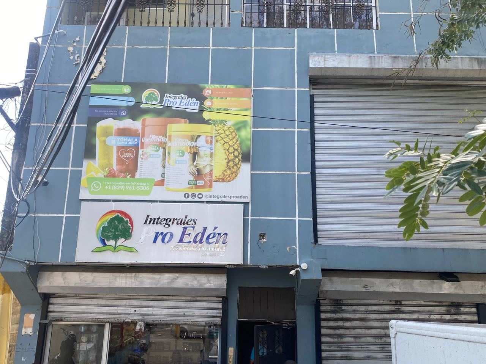

Pro Edén , es una empresa dedicada a ofrecer una amplia gama de productos de comida natural y saludable. Ellos se comprometen a proporcionar opciones nutritivas y deliciosas que promuevan un buen estilo de vida. Sus productos están cuidadosamente seleccionados y elaborados con ingredientes de alta calidad, reflejando el compromiso con el bienestar y la sostenibilidad en cada bocado. La alimentación saludable es su mayor cualidad, desde la selección de ingredientes hasta nuestros procesos de producción y distribución. Se esfuerzan por ser líderes en su ambito, constantemente ofreciendo productos que satisfacen las necesidades nutricionales de sus clientes y que también superan sus expectativas en cuanto a sabor y calidad.
